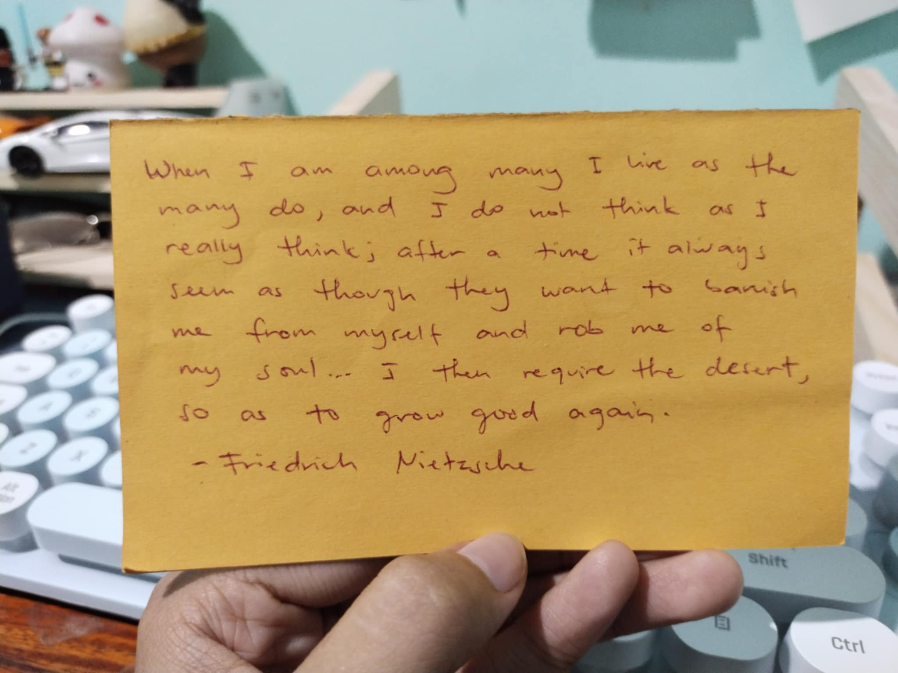

Lately, I find myself taking advice from my younger self. I was rereading a lot of my past journal entries and I was like, brooo, why am I regressing??? Do I need to be reminded more now than taught? (like the midwit memes hahaha)
I’ll just dump everything I might find useful here, just in case I end up in a crisis while living out that gnawing prophecy:
“How can a person know everything at 18, but nothing at 22?”
Jumpscare: I'LL BE 22 IN 5 MONTHS.
Expect to find me in my room in this state:
floor collapsing…floating…bouncing back…
It is still hard for me to get accustomed with people who are willing to share a sliver of the burdens I carry in life. I mean, I used to rely heavily on the counsel of the scriptures—it was just me and God. And transitioning from a place of dependency on a supernatural being to actually having people that are 100% real and not a by-product of my need to trust something beyond myself still feels like I am stepping into enemy territory.
When papa passed away, I told none of my friends. Kim found out through Dric, Heizl from mama's post, and Blossom didn't know until months later when we hung out. I couldn't give an answer when she asked why I kept my grief unknown to her. That pattern of gatekeeping my problems began when I took a break from college because my trauma-induced apostasy was getting worse.
I would take long walks by the beach or sa new road on my own. I discovered that many of my problems could be solved during periods of isolation. I unlocked a kind of resilience that didn't depend on seeking comfort from others. Plus, I had no one to talk to, not in a “huhuhu I have zero friends” kind of way, it was a conscious and deliberate choice. I didn't want others to feel bad about my situation. And figuring stuff on my own allowed me to build new frameworks to cope with whatever rut I am in that was in alignment with my values free from religious indoctrination, self-love garbage flooding my feed, and advice from people who are obsessed with ‘protecting their peace’ (they want to turn me into a lonely mf with zero social and communication skills).
I constantly remind myself that I have friends now whom I can rely on. There's no need to vent on a sky-daddy anymore. And trying to deadlift the world using my pinky fingers just to seem so mature? That's not helping either. Bro, I still send messages like this kay mama (mapa baby na anüò≠üò≠)

Stockdale Paradox: Holding two truths at once.
"Who didn't make it out of the camps?" "That's easy…the ones who didn't make it out were the optimists"
"...life can be heavy, especially if you try to carry it all at once. Part of growing up and moving into new chapters of your life is about catch and release. What I mean by that is, knowing what things to keep, and what things to release. You can’t carry all things, all grudges, all updates on your ex, all enviable promotions your school bully got at the hedge fund his uncle started. Decide what is yours to hold and let the rest go. Oftentimes the good things in your life are lighter anyway, so there’s more room for them. One toxic relationship can outweigh so many wonderful, simple joys. You get to pick what your life has time and room for. Be discerning."
"Never be ashamed of trying. Effortlessness is a myth..."
"...In your life, you will inevitably misspeak, trust the wrong people, underreact, overreact, hurt the people who didn’t deserve it, overthink, not think at all, self-sabotage, create a reality where only your experience exists, ruin perfectly good moments for yourself and others, deny any wrongdoing, not take the steps to make it right, feel very guilty, let the guilt eat at you, hit rock bottom, finally address the pain you caused, try to do better next time, rinse, repeat.
And I’m not gonna lie, these mistakes will cause you to lose things. I’m trying to tell you that losing things doesn’t just mean losing.
A lot of the time, when we lose things, we gain things too. Now you leave the structure and framework of school and chart your own path.
Every choice you make leads to the next choice which leads to the next, and I know it’s hard to know sometimes which path to take.
There will be times in life when you need to stand up for yourself. Times when the right thing is to back down and apologize.
Times when the right thing is to fight, times when the right thing is to turn and run. Times to hold on with all you have and times to let go with grace.
Sometimes the right thing to do is to throw out the old schools of thought in the name of progress and reform.
Sometimes the right thing to do is to listen to the wisdom of those who have come before us.
How will you know what the right choice is in these crucial moments? You won’t. How do I give advice to this many people about their life choices? I won’t.
Scary news is: You’re on your own now. Cool news is: You’re on your own now."